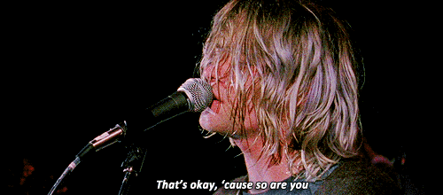
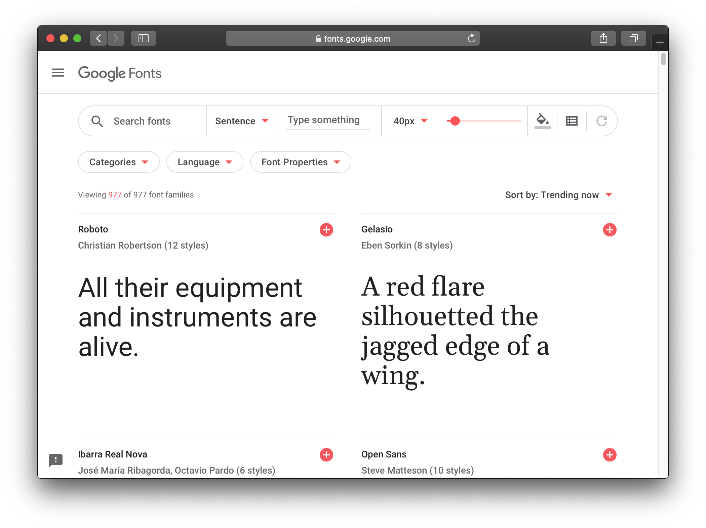
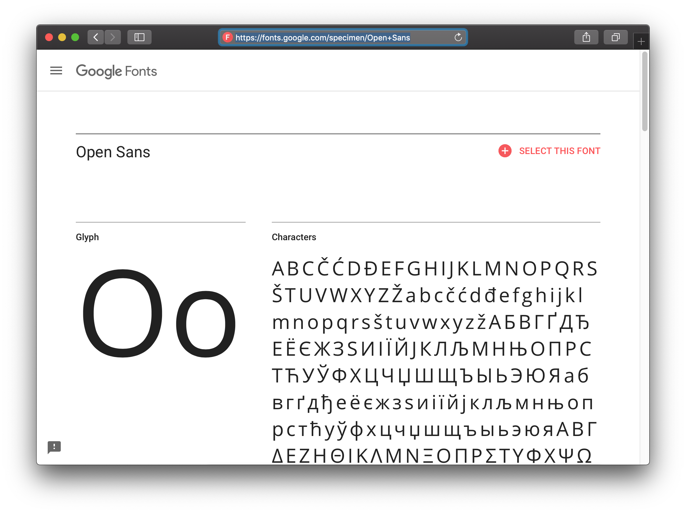
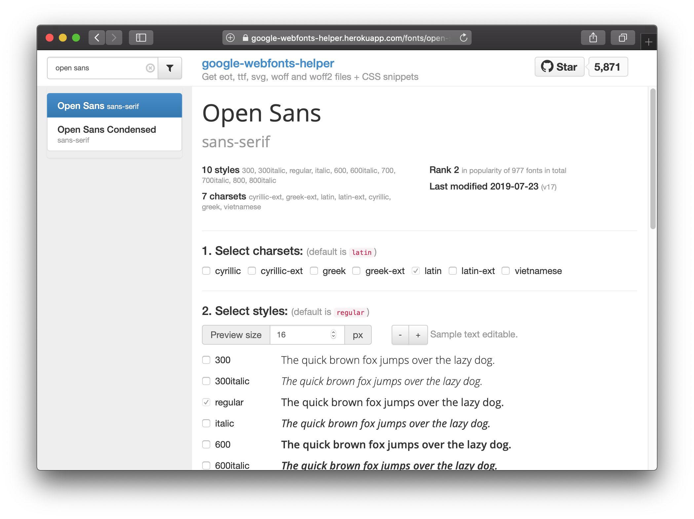
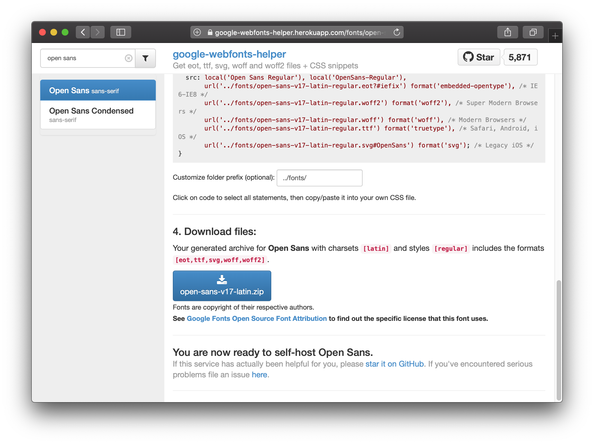
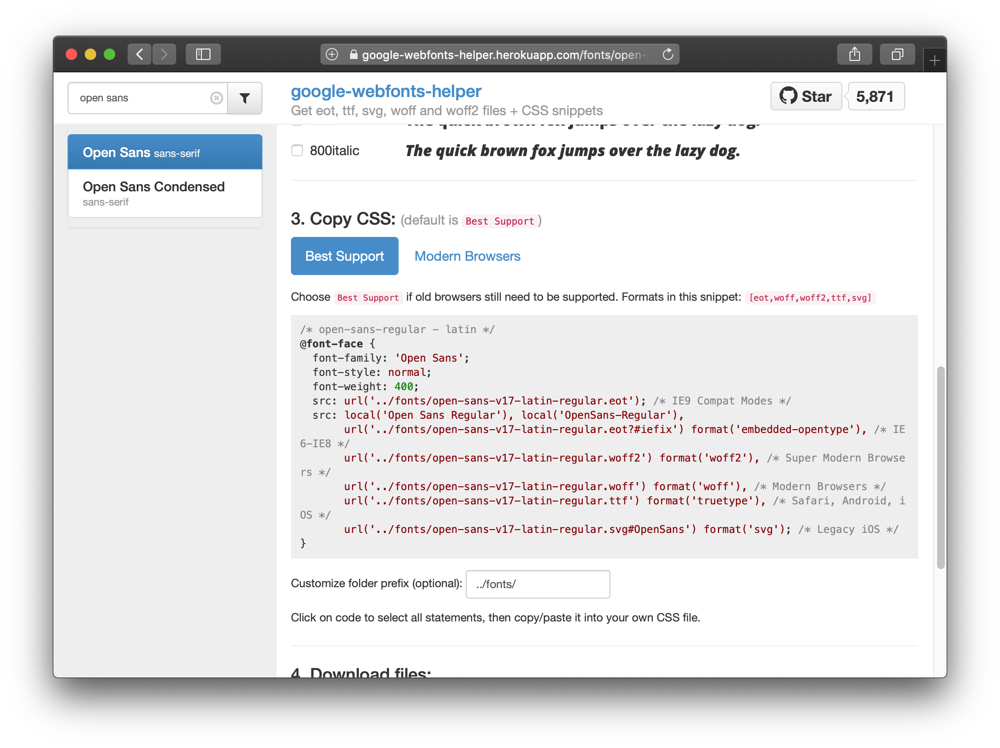

@font-face {
font-family: 'Merriweather';
font-style: normal;
font-weight: 400;
src: local('Merriweather'), local('Merriweather-Regular'),
url('../fonts/merriweather-v13-latin-regular.woff2') format('woff2'),
url('../fonts/merriweather-v13-latin-regular.woff') format('woff');
}
@font-face {
font-family: 'Lato';
font-style: normal;
font-weight: 400;
src: local('Lato Regular'), local('Lato-Regular'),
url('../fonts/lato-v11-latin-regular.woff2') format('woff2'),
url('../fonts/lato-v11-latin-regular.woff') format('woff');
}
body {
font-family: 'Merriweather', serif;
}
h1, h2, h3, h4, h5, h6, .nav, .article-duration, .archive-item-link, .footer {
font-family: 'Lato', sans-serif;
}
tl;dr
Want to change the font for your {blogdown} site? I’ve been using this workflow:
- Find a font on the Google Fonts site
- Search for the font name on the independent Google Web Fonts Helper
- Download the zip file from the Helper, then copy all the files to
static/fonts/folder - Copy the CSS from the Helper into your
static/css/fonts.cssfile
Not my type
You can change the default font face for your {blogdown} blog with freely-available files from Google Fonts.1
In this post I’ll show how you can do this with a bit of help from the Google Web Fonts Helper) by Mario Ranftl and by copy-pasting a small amount of CSS.
I know this approach works for this blog’s base theme: Lithium for Hugo by Jonathan Rutheiser and edited for use with {blogdown} by Yihui Xie. Your mileage may vary.
Important note: do not adjust your site’s themes/ folder. We’ll be changing things in the static/ folder only.2
Storefont window
The Google Fonts catalog has nearly a thousand open-source fonts that you can use for your site. You can filter by categories (serif, sans-serif, monspace, etc), language and font properties (thickness, slant, etc) to find what you’re looking for. You can type a sentence and see how it looks in each font.

Click a font name to go to a specimen page (example: Open Sans). Here you can see who designed it and a bit of information about the font itself. Of course, you also get a preview of the characters and styles. There’s even some suggestions for popular pairings.

Clicking the ‘select this font’ button will add a font to a ‘tray’ in the bottom right of the page, which is a bit like a shopping basket on a retail site. You can compare your selected fonts by clicking the ‘preview and share’ button in the upper right of the tray.
Fontastic helper
You will hopefully have selected a font after countless hours perusing Google Fonts.
Rather than use Google Fonts to get the files, I recommend you use Google Web Fonts Helper). Why? It has a simple interface and gives you what you need in one screen (example: Open Sans).
Use the search in the upper right and select your font. Sections 1 and 2 let you select character sets (cyrillic, latin, etc) and styles (regular, italic, etc). The default for many fonts is latin and regular, which is often what you want.

Now we’re going to (1) get the font files and (2) make your site recognise them.
1. Get fonts

To make the font files available to your site:
- Go to ‘4. Download files’ on the Helper font page
- Click the big blue button that says
<font-name>.zipto download a zipped folder of the font files - Unzip the file and copy all the files to the
static/fonts/folder of your site
By default, you’ll be copying across multiple file types (eot, svg, ttf, woff, woff2), which will give the best possible coverage for users of your site visitng from different browsers. You can, in theory, get away with using just the woff and woff2 files for modern browsers. Except there’s always an IE6 user somewhere.
2. Recognise fonts

It’s not enough to just host the font files; we need to adjust some CSS. CSS files are basically style instructions that inform how HTML files (like our blog posts) should be rendered. You don’t need to be a CSS expert for this part.
Here’s the steps in short:
- Go to ‘3. Copy CSS’ on the Helper font page
- Copy the CSS code
- Paste it into
static/css/fonts/(you can overwrite the CSS for any other fonts that you aren’t using) - Adjust the font specifications for the body and title text, overwriting the font you’re replacing
It’s worth explaining those last couple of steps a bit more. The default static/css/fonts.css file for the Lithium theme looks like this:
The @font-face sections declare the fonts and where the files are stored. There are two: Merriweather and Lato.
The last two sections (that don’t start with @) point out which fonts should be used in the main body text and for a number of other elements of the site, like headers (h1, etc) and the .footer. Other elements can be added.
You can also name more than one font for each site element. For example, the font-family: 'Merriweather', serif; of the the body {} section says that body text should be ‘Merriweather’ but should default to the host computer’s generic serif file if there’s a problem displaying Merriweather.
So, you can copy-paste over the @font-face sections with the CSS you copied from the Helper and then adjust the font-family names with your selections.
Just my type
As examples, you can see rostrum.blog’s static/fonts/ folder and static/css/fonts.css.
Compare the CSS file for this site to the Lithium default above:
/* roboto-regular - latin */
@font-face {
font-family: 'Roboto';
font-style: normal;
font-weight: 400;
src: url('../fonts/roboto-v20-latin-regular.eot'); /* IE9 Compat Modes */
src: local('Roboto'), local('Roboto-Regular'),
url('../fonts/roboto-v20-latin-regular.eot?#iefix') format('embedded-opentype'), /* IE6-IE8 */
url('../fonts/roboto-v20-latin-regular.woff2') format('woff2'), /* Super Modern Browsers */
url('../fonts/roboto-v20-latin-regular.woff') format('woff'), /* Modern Browsers */
url('../fonts/roboto-v20-latin-regular.ttf') format('truetype'), /* Safari, Android, iOS */
url('../fonts/roboto-v20-latin-regular.svg#Roboto') format('svg'); /* Legacy iOS */
}
/* lekton-regular - latin */
@font-face {
font-family: 'Lekton';
font-style: normal;
font-weight: 400;
src: url('../fonts/lekton-v10-latin-regular.eot'); /* IE9 Compat Modes */
src: local('Lekton'), local('Lekton-Regular'),
url('../fonts/lekton-v10-latin-regular.eot?#iefix') format('embedded-opentype'), /* IE6-IE8 */
url('../fonts/lekton-v10-latin-regular.woff2') format('woff2'), /* Super Modern Browsers */
url('../fonts/lekton-v10-latin-regular.woff') format('woff'), /* Modern Browsers */
url('../fonts/lekton-v10-latin-regular.ttf') format('truetype'), /* Safari, Android, iOS */
url('../fonts/lekton-v10-latin-regular.svg#Lekton') format('svg'); /* Legacy iOS */
}
body {
font-family: 'Roboto', serif;
}
h1, h2, h3, h4, h5, h6, .nav, .article-duration, .archive-item-link, .article-meta, .footer {
font-family: 'Lekton', monospace;
}
code {
font-family: 'Lekton', monospace;
font-size: 100%;
}I chose the monospace Lekton for code and headers and the serif Roboto for the body. I like Lekton’s relative narrowness especially, along with its almost-square {braces}. Roboto is clean and clear, if ubiquitous.
As ever with these decisions, I may well change my mind again at some point.
Environment
Session info
Last rendered: 2023-08-05 16:56:13 BSTR version 4.3.1 (2023-06-16)
Platform: aarch64-apple-darwin20 (64-bit)
Running under: macOS Ventura 13.2.1
Matrix products: default
BLAS: /Library/Frameworks/R.framework/Versions/4.3-arm64/Resources/lib/libRblas.0.dylib
LAPACK: /Library/Frameworks/R.framework/Versions/4.3-arm64/Resources/lib/libRlapack.dylib; LAPACK version 3.11.0
locale:
[1] en_US.UTF-8/en_US.UTF-8/en_US.UTF-8/C/en_US.UTF-8/en_US.UTF-8
time zone: Europe/London
tzcode source: internal
attached base packages:
[1] stats graphics grDevices utils datasets methods base
loaded via a namespace (and not attached):
[1] htmlwidgets_1.6.2 compiler_4.3.1 fastmap_1.1.1 cli_3.6.1
[5] tools_4.3.1 htmltools_0.5.5 rstudioapi_0.15.0 yaml_2.3.7
[9] rmarkdown_2.23 knitr_1.43.1 jsonlite_1.8.7 xfun_0.39
[13] digest_0.6.33 rlang_1.1.1 evaluate_0.21 Footnotes
See also sections 2.5.1 and 2.7 of the Blogdown book.↩︎
Reuse
CC BY-NC-SA 4.0